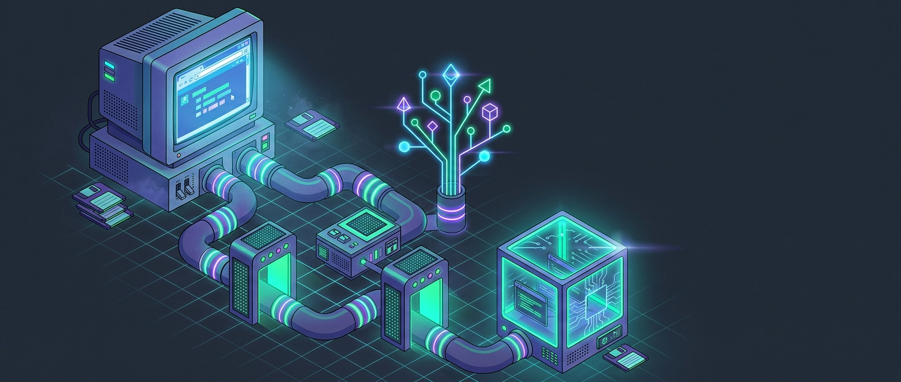

PIE fixes broken UI locators from failed trace archives without hallucinating, weakening assertions, or masking real backend bugs.

You control exactly when and how changes touch your workspace.
$ npx pw-intel repair # 1. Inspection Mode (Dry-Run)
[1/1] › Ingesting trace: test-results/checkout-trace.zip
› Gate 0: Checking network logs... PASS (No HTTP 5xx / Auth drops)
› Evaluating deterministic AST locator match...
✓ [Tier 1] Deterministic AST match found: #login-button (confidence: 0.98)
Status : PROPOSAL_READY (Workspace untouched)
$ npx pw-intel repair --execute # 2. Worktree Sandbox Verification
› Created isolated headless Git worktree: .git/worktrees/pie-sandbox-a1
› Running Playwright in sandbox: 1 passed (1.8s)
✓ VERIFIED in isolation. Pruned sandbox. Working files untouched.
$ npx pw-intel repair --apply # 3. Promote Fix to Workspace
✓ Applied verified patch to pages/checkout.page.ts
Why senior quality teams trust PIE over naive LLM wrappers.
If a test fails because a backend API threw an HTTP 500, a session expired, or the database crashed, PIE immediately abstains. Zero masked bugs.
100% offline and sub-second. Inspects DOM action snapshots inside trace.zip and updates Page Object AST trees with zero token cost.
Every proposed patch is compiled and re-executed against Playwright inside an isolated Git worktree. PIE never touches your working files without sandbox proof.
Test assertions (expect(...)) are structurally immutable. PIE will never alter, weaken, or delete assertions to make a failing test pass.
Records verified locator successes and penalizes brittle selectors using 30-day time-decayed Bayesian scoring stored in .pw-intelligence/.
Native MCP server (pw-intel mcp) allows Cursor, Windsurf, and Claude Code to diagnose traces and fix tests directly inside your IDE.
How PIE provides enterprise-grade safety vs. first-generation AI tools.
| Capability | Naive AI Healers | Playwright Intelligence Engine (PIE) |
|---|---|---|
| Backend 500 / Network Drop | Blindly changes UI selector ❌ | Gate 0 Abstains; generates bug ticket ✅ |
| Assertion Invariance | Weakens or deletes expect() ❌ |
Structurally immutable invariant ✅ |
| Workspace Verification | Mutates active branch directly ❌ | Isolated headless Git worktree sandbox ✅ |
| Execution Cost | $0.05 – $0.20 per failure ❌ | $0.000000 USD (Tier 1 AST Fast-Path) ✅ |
| Security & Privacy | Dumps entire raw DOM to cloud LLM ❌ | Local offline AST; redacts auth cookies ✅ |
Native skills that AI coding assistants (Cursor, Claude Code, Antigravity, Cline) can execute directly.
Runs diagnostic healthcheck (pw-intel doctor), initializes .pie/config.json, and audits trace retention in playwright.config.ts in under 4 seconds.
Autonomous end-to-end trace diagnosis, Gate 0 negative control enforcement, Git worktree sandbox verification (--execute), and atomic file promotion.
Eliminates flaky tests by detecting arbitrary sleeps (waitForTimeout) and refactoring them into deterministic event-driven awaits with multi-trial validation.